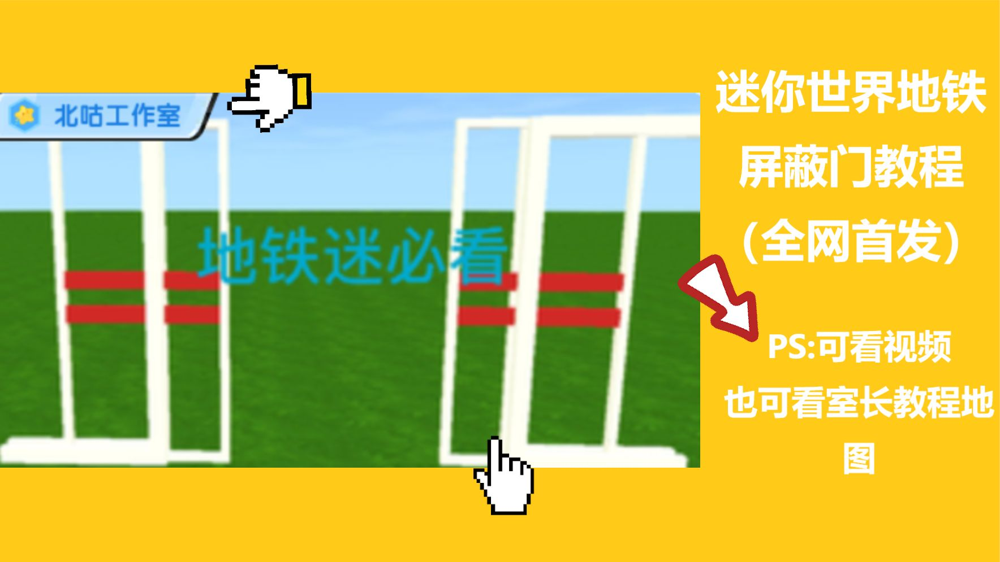
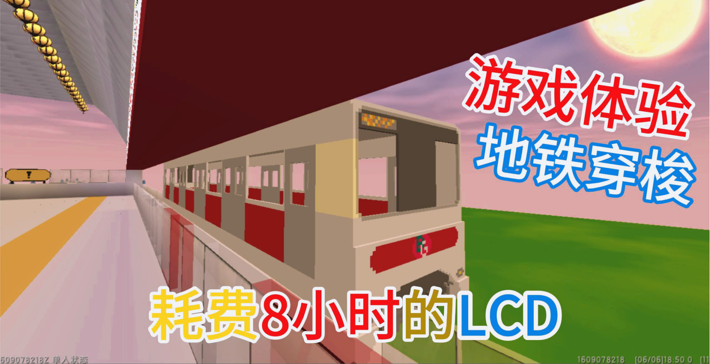
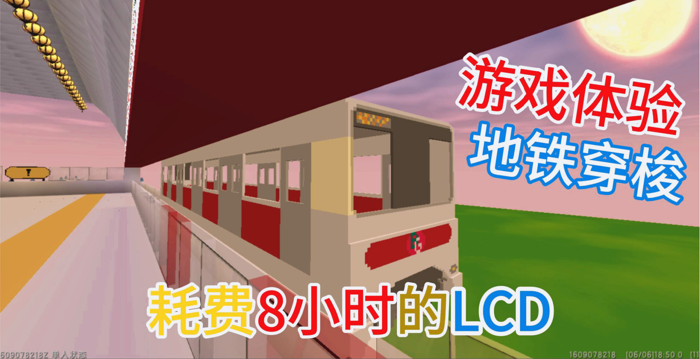
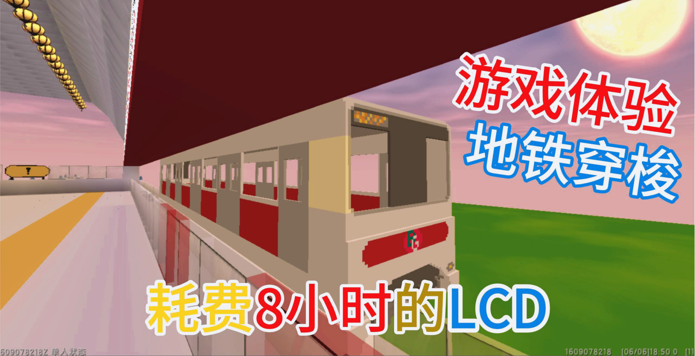

介绍
北咕工作室
北咕工作室成立于2022年。北咕工作室是由一位名叫北咕带你看世界的一位玩家成立，以最大限度地激发开发者的创新活力。工作室主要专注于在迷你世界轨交类、航空类、潜艇类等一些交通类开发，在Mineraft打造出优质Java mod。
工作室的职责为：逐步建成一支具有想象力、智慧研究团队，让迷你世界上有着更优质的地图，不断产生重要原创性成果，培养一批优秀人才，探索有利于科研创新的新体制。
北咕工作室主要研究方向：（1）利用各种功能研究出全自动地铁；（2）学习建筑方面，让每个建筑独一无二；（3）研究高难度问题，开源原创技术教程。
工作室官网为室长一人所建，无任何人员所来帮助建设；此网站有许多教程，也可以通过此网站，来加入北咕轨交建设！申鸣：网站利用swiper轮播图插件。

 

